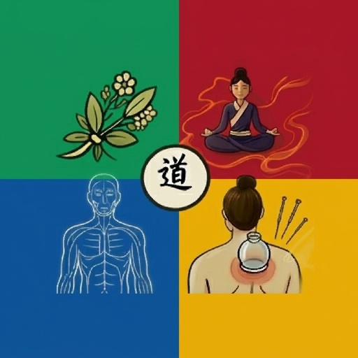
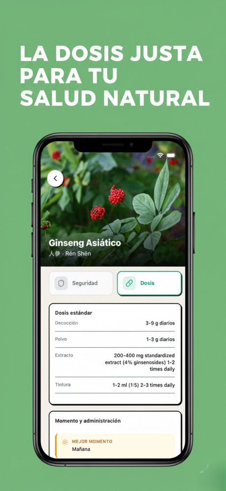
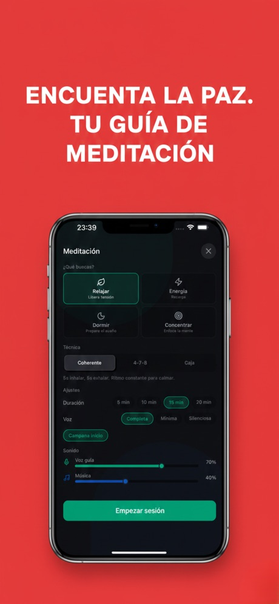
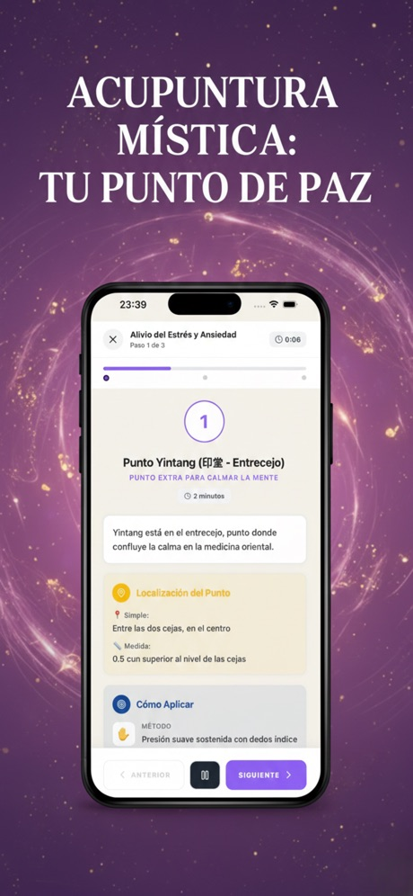
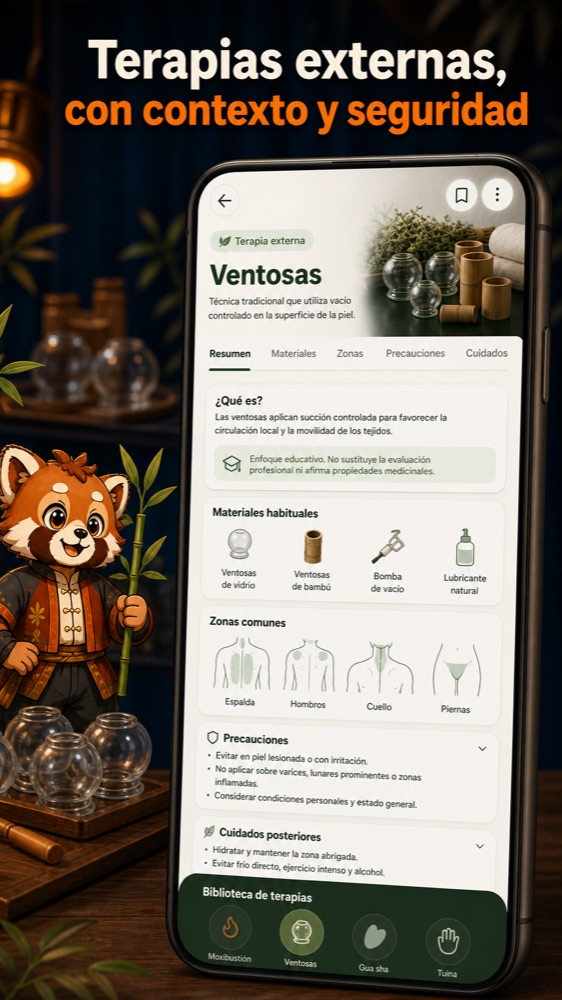
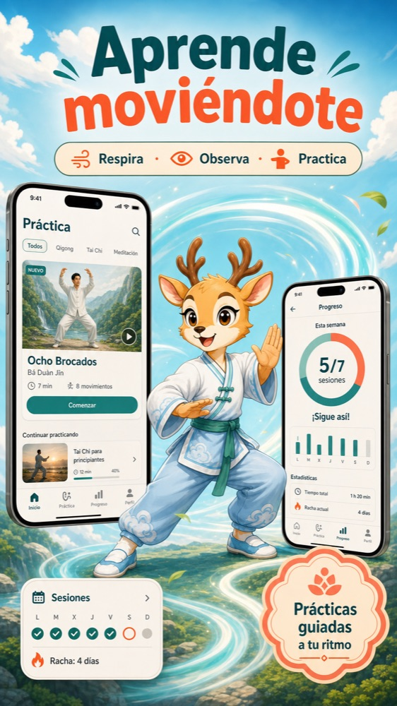
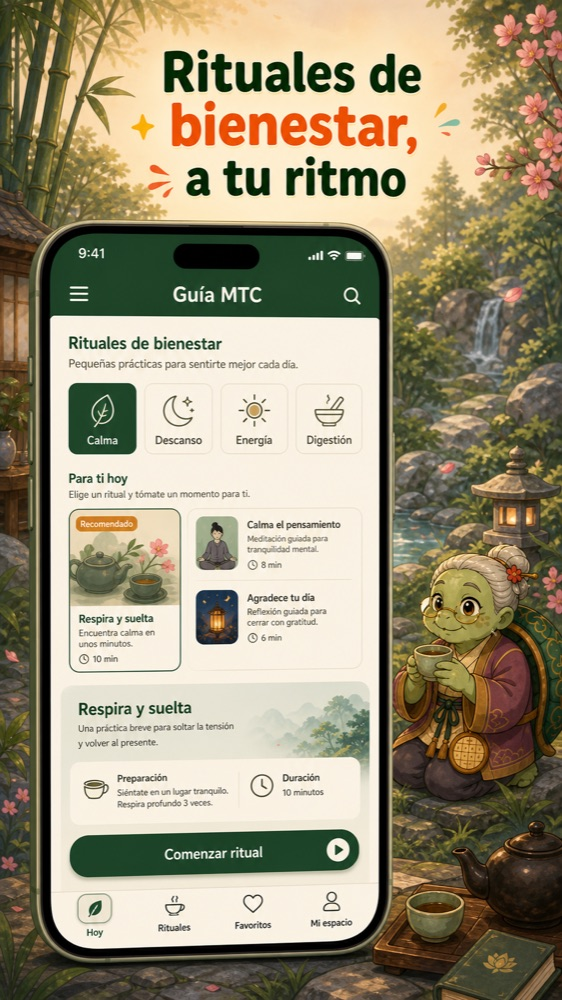
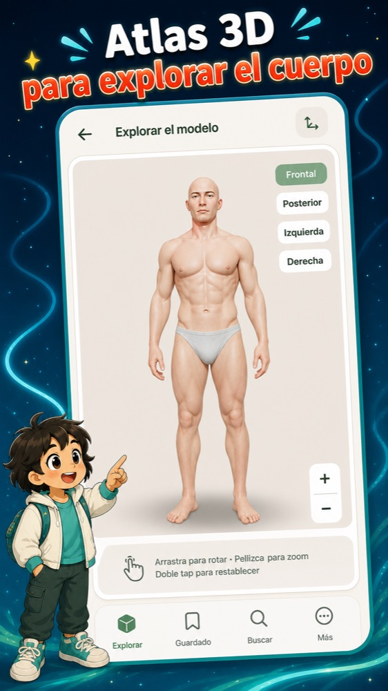

Manual Yin Yang: Guía MTC
Manual de estudio de medicina tradicional china. Acupuntura, hierbas y canales
- Gratis
- +1000 descargas
- Acupuntura
- Hierbas
- Meridianos
Así es por dentro






